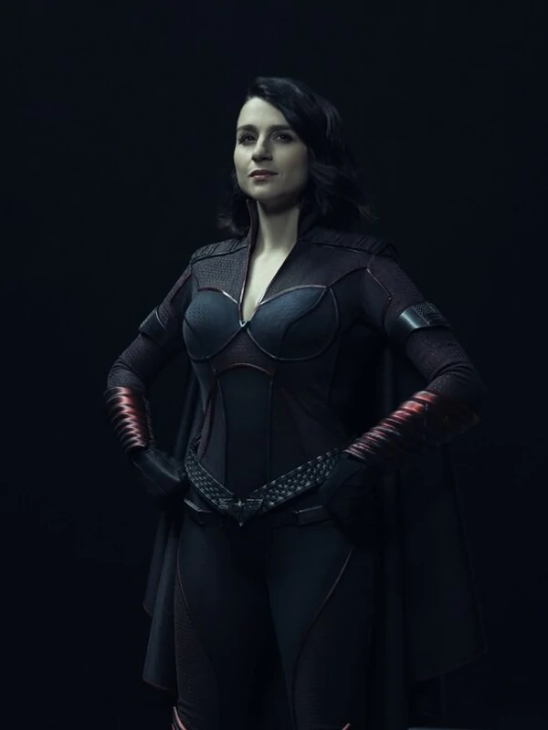

Strom Front
Aya Cash como Stormfront (temporada 2; invitada: temporada 3), una celebridad de internet y miembro de los Siete con habilidades electrocinéticas. Mientras que públicamente se presenta como partidaria de la igualdad de género, Stormfront es también secretamente una supremacista blanca que disfruta asesinando a ciudadanos de raza negra. Su popularidad entre el público estadounidense amenaza el sentido de superioridad de Homelander, lo que les lleva a repetidos conflictos con este héroe.